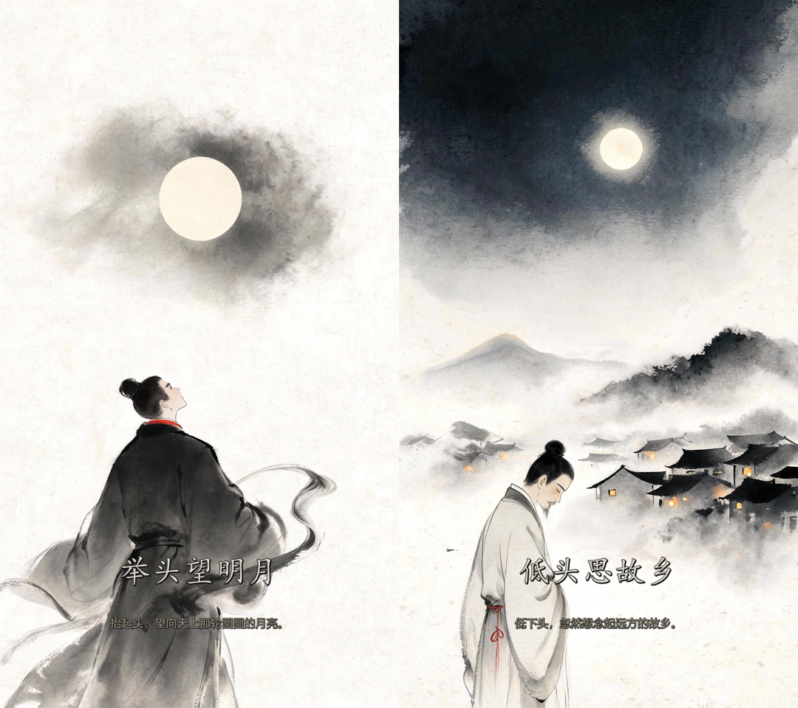
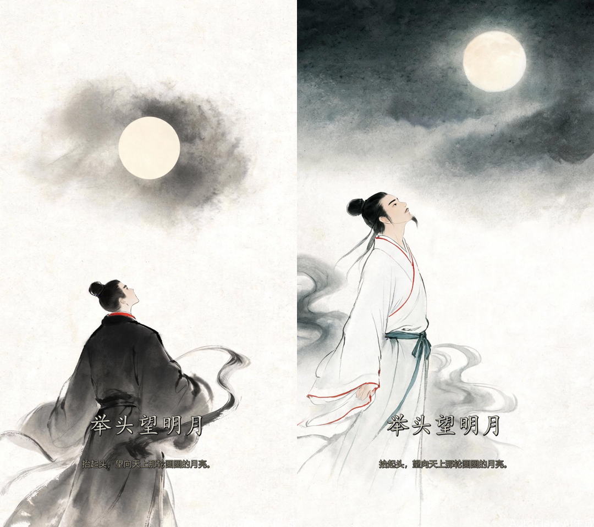
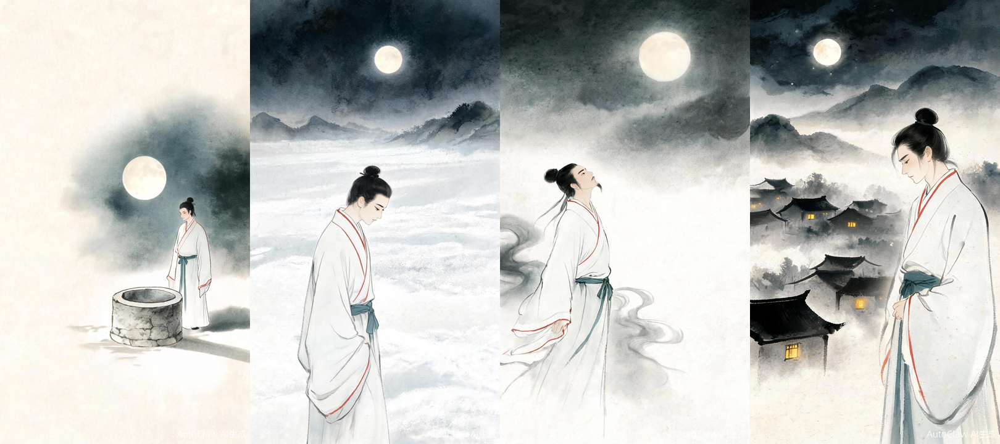
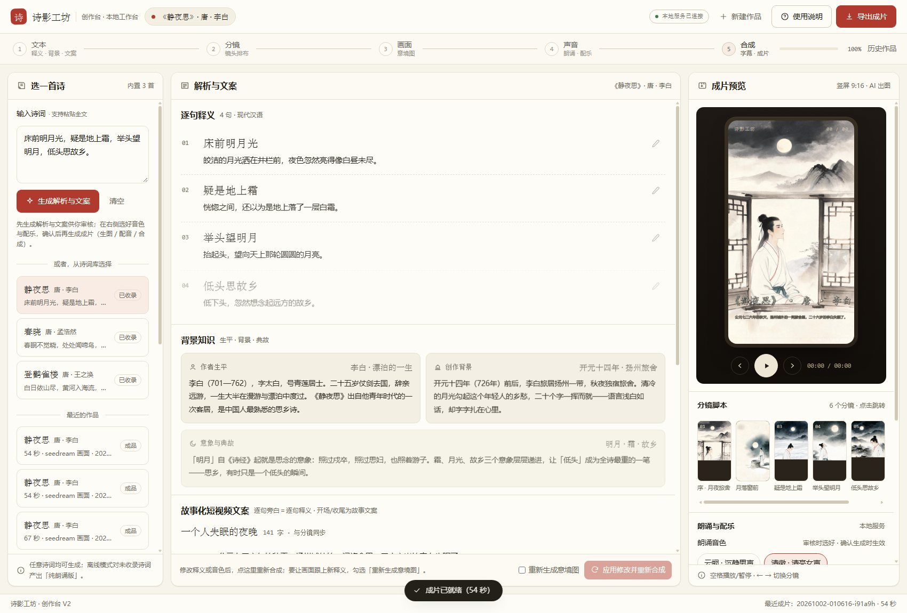

坊诗影工坊 · 工坊手记 · 增补页 03
同一位诗人：让每句意境图里的人物始终如一
情景判定「诗句人物是否为同一人」→ 固定形象注入每一镜提示词 → 出图与成片逐镜核验。以《静夜思》（井栏编辑版）全链路实测。
日期：2026-10-02
状态：单测 32/32 · 识图核验 6 镜通过
配套：《交付报告》《增补页 02》
01 · 问题同一支片子，两个「李白」
人物会在多镜之间「换人」
旧版成片里，第 3 句「举头望明月」的人物是黑袍红领的青年，第 4 句「低头思故乡」却成了白袍蓄须的男子——同一支片子里出现了两个「李白」。逐帧看不觉得，放在一起就出戏。

旧版两支分镜（第 3 句 / 第 4 句）：服装颜色、领缘、胡须全部对不上——需要一套「人物一致性」机制。
02 · 机制先判断，再约束
情景判断「是不是同一人」，然后逐镜写死形象
- 三级判定 —— ① 内置诗用精修设定（《静夜思》→「作者本人 · 青年李白」，二十六岁客居扬州）；② 自定义诗按关键词推断（抒情主人公 / 农人 / 渔者等单一主体）；③ 接入大模型后，解析阶段直接输出人物判定（结构化
persona 字段已内置）。
- 固定形象注入 —— 判定为同一人时，生成一段带服装颜色、发型、气质的形象描述，逐字写入每一镜的提示词，并要求「所有分镜中的面貌、发型、服装必须与此完全一致」。
- 两档出镜策略 —— 涉及人物行为的句子（「举头望明月」「疑是地上霜」）要求须出现该人物；写景句（「月落窗前」）则「如出现，必须是该人物」。标题镜与尾声镜同样纳入全局约束。
- 如实标注边界 —— 多人物诗（送别双方）或纯写景诗判定为「不启用」，不做多余约束；判定结果与描述在创作台可见、可改。
注入的提示词片段（逐字出现在每一镜）
【人物设定 · 全片同一人】人物为作者本人——青年李白（二十六岁，客居扬州）；固定形象：一位二十六岁的青年诗人：束黑色发髻、不戴冠帽，身着月白色交领右衽长衫，衣领与袖口有暗朱色细滚边，腰束深青布带，面容清瘦、眉目清朗，身姿挺拔。（所有分镜中的面貌、发型、服装必须与此完全一致）
03 · 效果逐镜核验
全片六镜，同一个人

第 3 句分镜修复前后：左（旧）黑袍红领；右（新）月白长衫、朱色缘边、青色腰带——与全片统一。

第 1–4 句新分镜（左 → 右）：井栏旁俯瞰 → 低头疑霜 → 举头望月 → 低首思乡；同一形象贯穿四个姿态。
| 分镜 | 识图核验读出的形象 | 结论 |
|---|
| 第 1 句 · 井栏月光 | 白袍、红色领缘与袖口、青蓝腰带，黑发束髻，侧身低头望向水井 | 一致 |
| 第 2 句 · 疑是地上霜 | 同一位青年，白袍红缘、侧身朝左低头 | 一致 |
| 第 3 句 · 举头望明月 | 同上，仰首望月；下巴仅浅影、无明显胡须 | 一致 |
| 第 4 句 · 低头思故乡 | 同上，侧身低头沉思 | 一致 |
| 标题镜 · 尾声镜 | 同一形象侧坐窗边 / 立于月下 | 一致 |
核验方式
对全部 6 张分镜图与成片抽帧逐一调用识图接口，逐项比对年龄段、服装颜色与制式、发型与姿态；成片字幕同步复核（旁白/字幕=逐句释义）。
04 · 工作台可见、可改
「人物」块：判定透明，描述可编辑

创作台「人物」块：显示「谁 + 全片同一形象（内置设定）」，点一下即可修改形象描述（2026-10-02 实机截图）。
- 改完怎么生效 —— 修改形象描述后按「重新合成」；要让画面按新形象重出，请勾选「重新生成意境图」（默认复用旧画面）。
- 旧作品自动兼容 —— 打开历史任务时若无判定字段，会按诗句自动推导并在面板展示，无需重跑。
- 诚实说明 —— 自定义诗的关键词推断是通用兜底（未接入大模型时）；出图模型仍有随机性，同一设定下细节可能存在微差——若需要「同一张脸」级的一致，后续可接参考图链路（路线图项）。